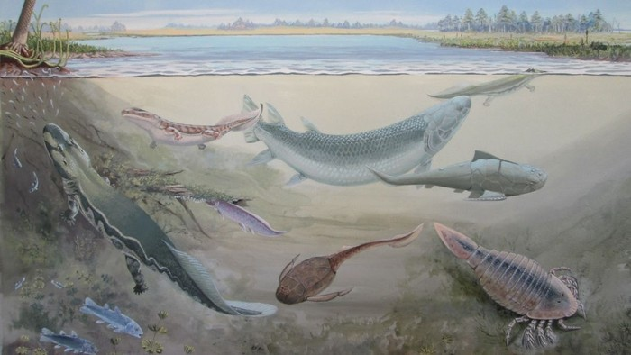

My Blog
Tidur di Ruangan Gelap Bisa Perpanjang Usia
Beberapa orang tidur dalam keadaan lampu menyala atau terang dan beberapa lainnya memiliki tidur dalam keadaan gelap.
Baca Selengkapnya..

Ikan Purba Mirip Hiu Ditemukan di Maroko, Hidup 365 Juta Tahun Lalu
Ahli paleontologi telah menemukan spesimen fosil ikan di Maroko. Beberapa fosil dideskripsikan sebagai genus dan spesies baru ikan chondrichthyan bermoncong lebar.
Baca Selengkapnya..NASA Tugaskan Astronaut Perempuan Pertama ke Bulan, Ini Profilnya
Pendaratan manusia ke permukaan Bulan terakhir terjadi 50 tahun yang lalu lewat misi Apollo 17 yang dipimpin Eugene A. Cernan.
Baca Selengkapnya..